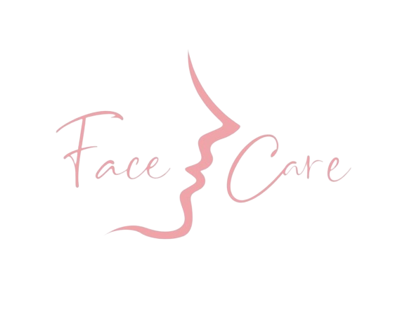

Conheça a Dra Bruna Bizelli 
Dra. Bruna Bizelli é uma biomédica especializada em estética, com atendimentos em toda Grande São Paulo . Com vasta experiência em procedimentos faciais e corporais, ela se destaca pelos resultados excepcionais e satisfação dos pacientes. Sua abordagem personalizada e atenciosa, aliada ao conhecimento atualizado e habilidades aprimoradas, garantem tratamentos eficazes e seguros. Dra. Bruna Bizelli é reconhecida por sua empatia, gentileza e comprometimento com o bem-estar dos pacientes. Sua paixão pela beleza e ética profissional conquistaram uma base fiel de pacientes satisfeitos. Com presença em toda a Grande São Paulo, ela ajuda as pessoas a aumentarem sua autoconfiança e a alcançarem sua melhor versão estética.
Nossa missão é: "Proporcionar auto-estima e qualidade de vida aos clientes".
Oferecemos profissionais experientes e antenados às mudanças no mundo da moda. O atendimento possui padrão de excelência e agilidade, garantindo qualidade e satisfação dos nossos clientes.
Beneficios
- Redução das linhas de expressão e rugas faciais;
- Melhora da aparência da pele envelhecida, proporcionando um aspecto mais jovem e revitalizado;
- Melhora do contorno facial, proporcionando um aspecto mais harmonioso e preenchido;
- Alívio dos sintomas de hiperidrose (transpiração excessiva) e enxaquecas crônicas.
Endereços
Nossos atendimentos são realizados em toda a rede Livance